The hidden worlds within us
Latent States is a collaboration between artists, scientists, and technologists based at the Champalimaud Foundation, Lisbon. We build installations, stage encounters between humans and machines, and run experiments in perception at festivals, galleries, and warehouses.
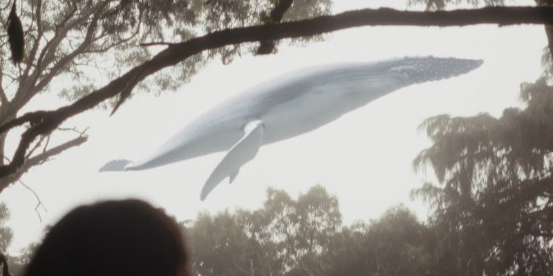
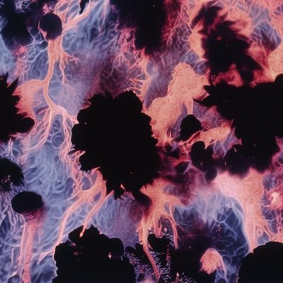
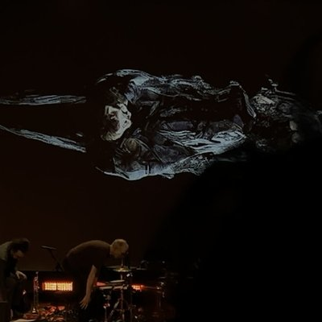
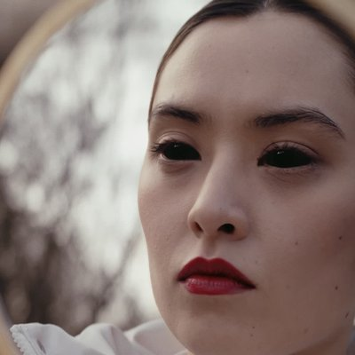
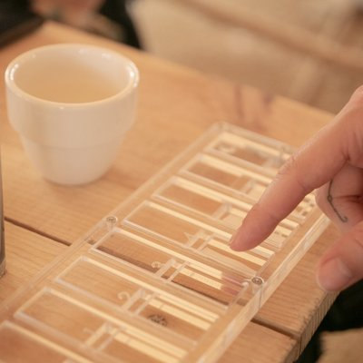
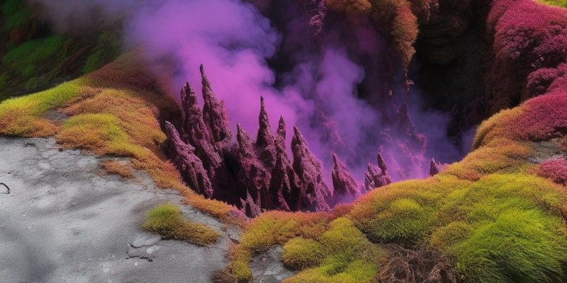
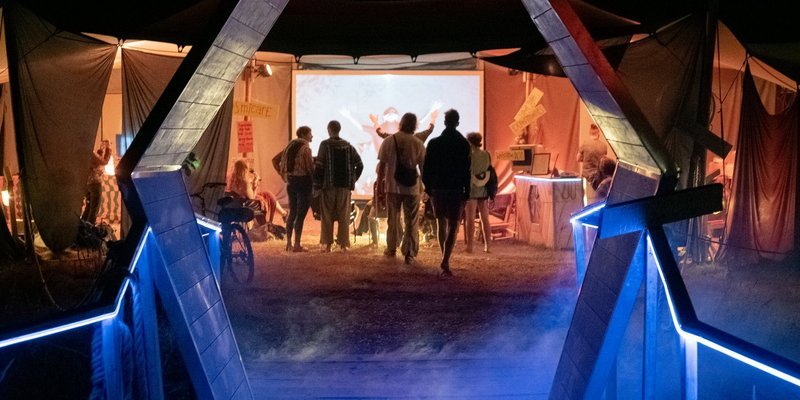
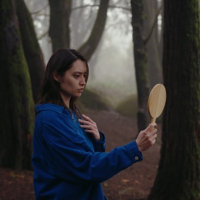
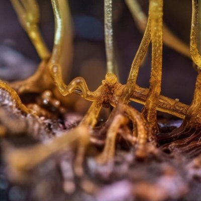
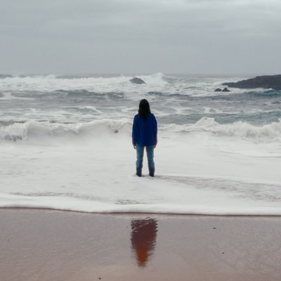
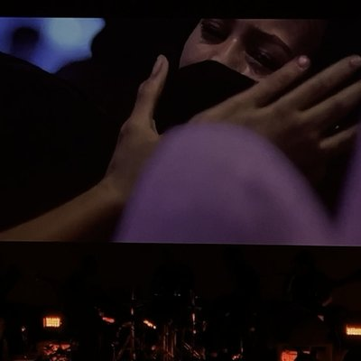
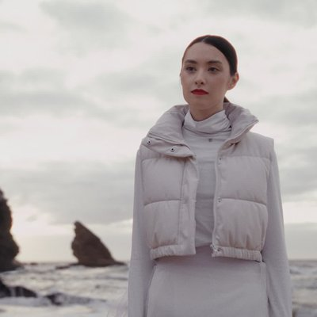
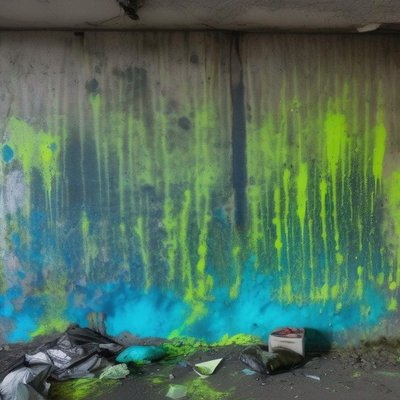
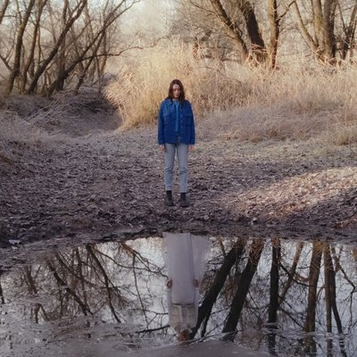
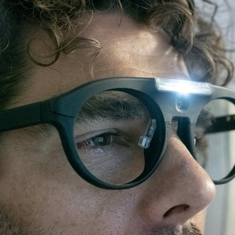
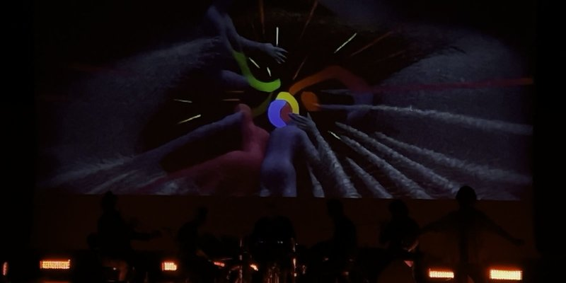
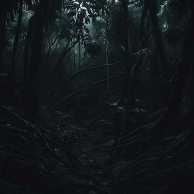
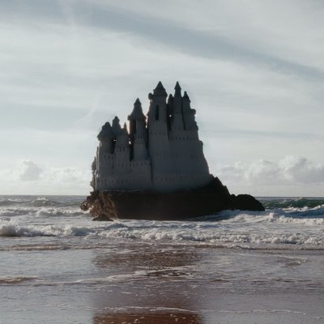
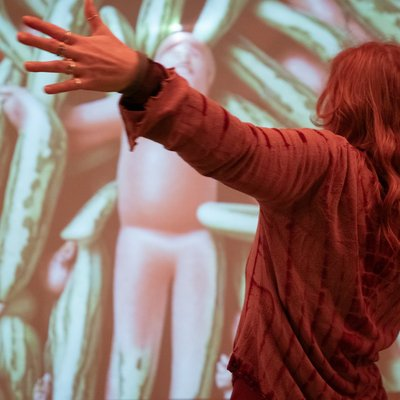
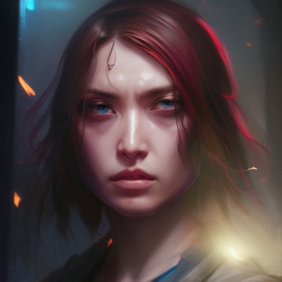
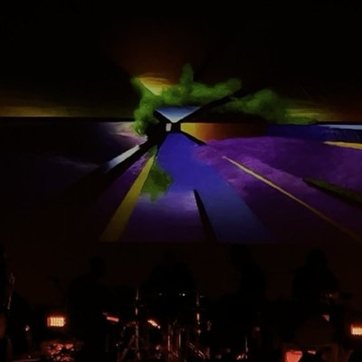
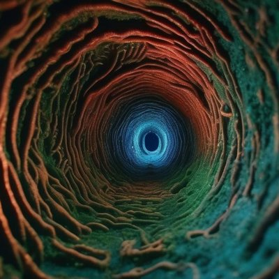
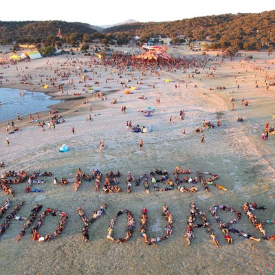
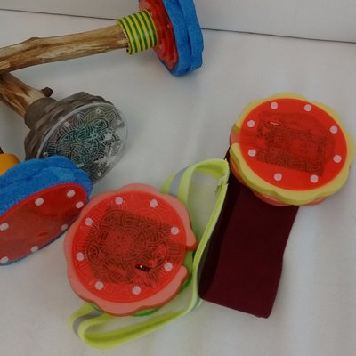
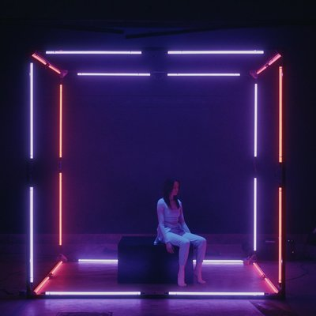
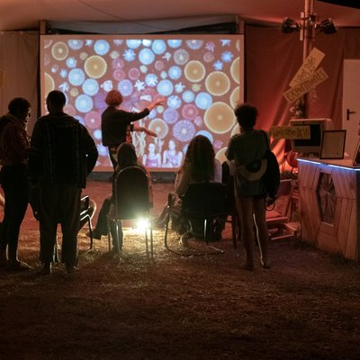
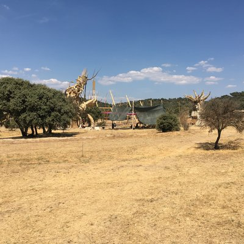
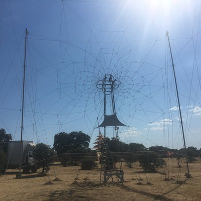